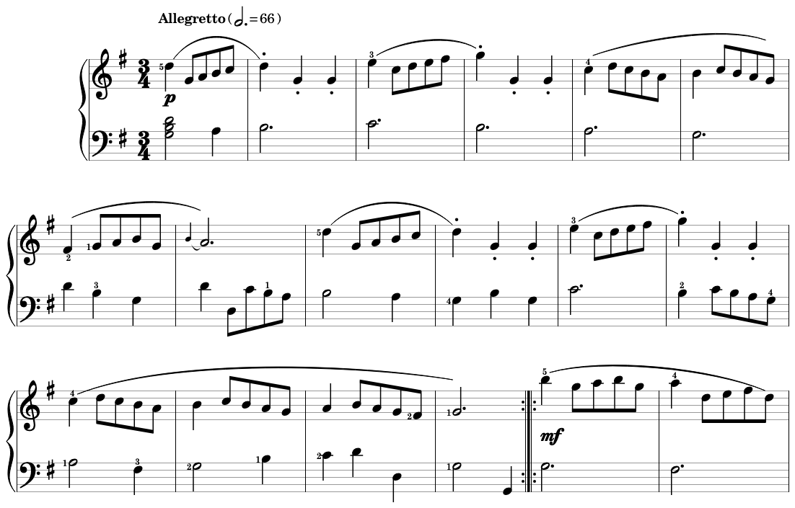

VexFlow
VexFlow home
Visual test gallery
Minuet in G major
Christian Petzold · Notebook for Anna Magdalena Bach

Test modules
Run all tests
Accidental
Annotation
Articulation
Auto-Beaming
Barline
Beam
Bend
BoundingBox
ChordSymbol
Clef
Clef Keys
CrossBeam
Curve
Demo - Petzold
Dot
EasyScore
Factory
Font
Formatter
Fraction
GhostNote
GlyphNote
Grace Notes
Grace Tab Notes
KeyManager
KeySignature
ModifierContext
MultiMeasureRest
MusicTests
NoteHead
NoteSubGroup
OffscreenCanvas
Ornament
Parser
PedalMarking
Percussion
Registry
Renderer
Rests
Rhythm
Stave
StaveConnector
StaveHairpin
StaveLine
StaveModifier
StaveNote
StaveTie
StringNumber
Strokes
Style
TabNote
TabSlide
TabStave
TabTie
TextBracket
TextNote
Three Voice Rests
TickContext
TimeSignature
Tremolo
Tuning
Tuplet
TypeGuard
Unison
VF.* API
Vibrato
VibratoBracket
Voice